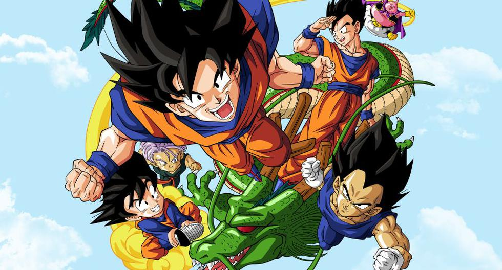
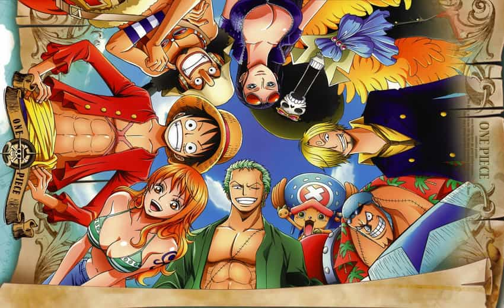
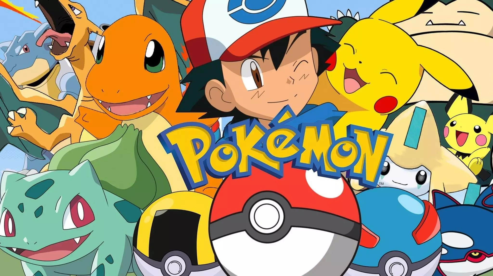
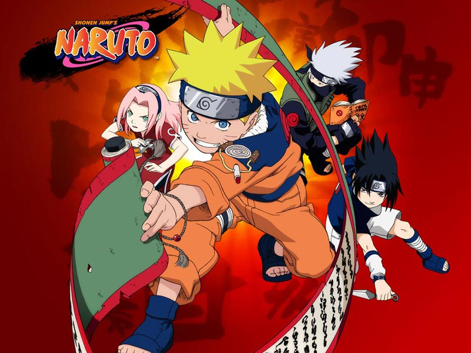
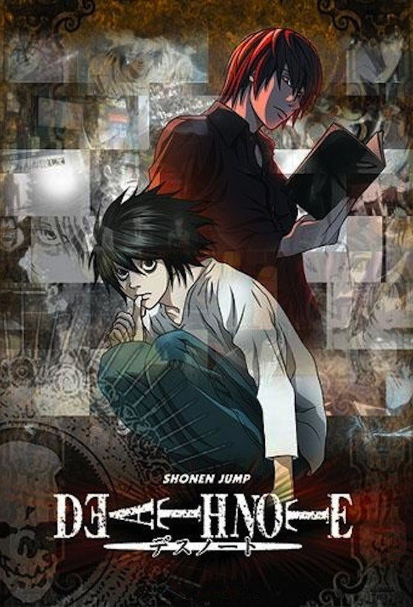
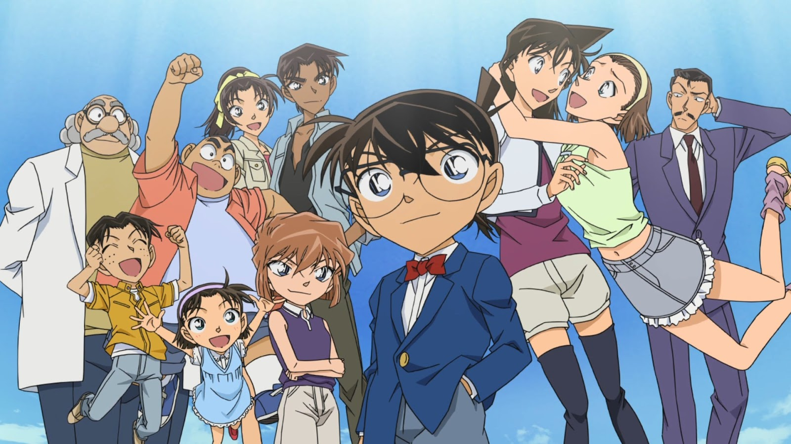
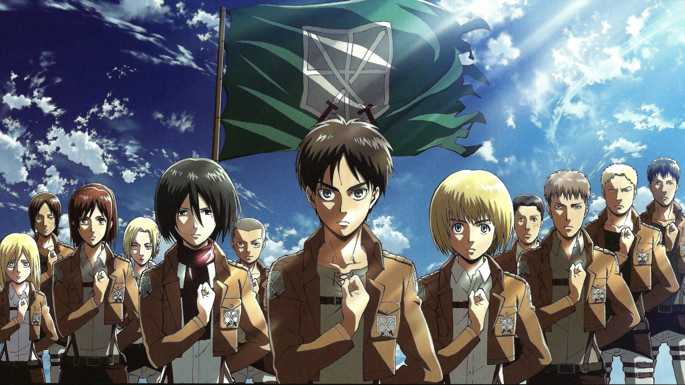
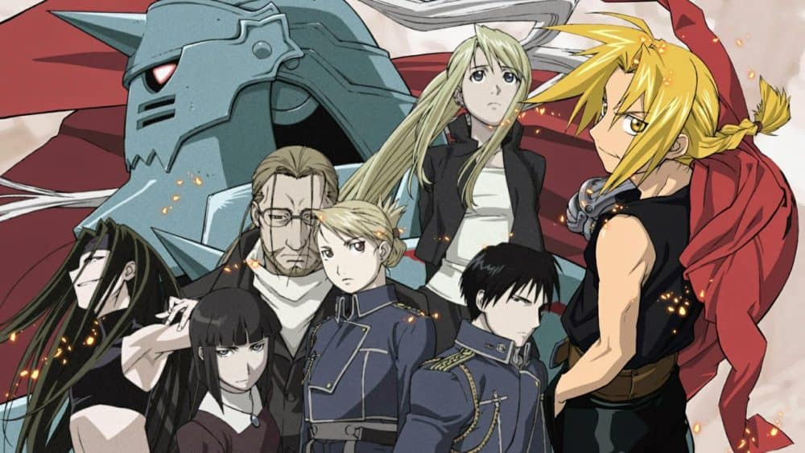
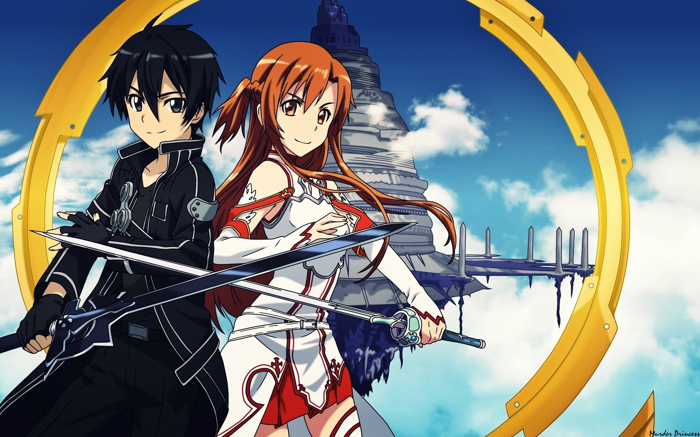

Name |
Photo |
Episodes |
Seasons |
Movies |
Ovas/Specials |
Summary |
Status |
Dragon Ball |
 |
847 |
6 |
23 |
N/A |
The story begins when a then monkey-tailed boy named Son Gokū meets a girl named Bulma. Where years after crash-landing onto the planet Earth is offered the chance to join Bulma in her journey to find all 7 magical Dragon Balls. Bulma wishes to find the magical balls in order to wish for a boyfriend. The legend has it that once an individual collects the seven magical Dragon Balls they summon a giant dragon named Shenron who grants them a wish of their choice. |
Ongoing |
One Piece |
 |
1101 |
15 |
14 |
23 |
Monkey D. Luffy refuses to let anyone or anything stand in the way of his quest to become king of all pirates. With a course charted for the treacherous waters of the Grand Line, this is one captain who’ll never drop anchor until he’s claimed the greatest treasure on Earth—the Legendary One Piece! |
Ongoing |
Pokemon
|  |
1180 |
24 |
24 |
25 |
Ash Ketchum, his yellow pet Pikachu, and his human friends explore a world of powerful creatures. |
Ongoing |
Naruto |
 |
942 |
6 |
11 |
9 |
Twelve years before the start of the series, the Nine-Tails attacked Konohagakure destroying much of the village and taking many lives. The leader of the village, the Fourth Hokage, sacrificed his life to seal the Nine-Tails into a newborn, Naruto Uzumaki. Orphaned by the attack, Naruto was shunned by the villagers, who out of fear and anger, viewed him as the Nine-Tails itself. Though the Third Hokage outlawed speaking about anything related to the Nine-Tails, the children — taking their cues from their parents — inherited the same animosity towards Naruto. In his thirst to be acknowledged, Naruto vowed he would one day become the greatest Hokage the village had ever seen. |
Ongoing |
Death Note |
 |
37 |
1 |
6 |
2 |
Light Yagami is an ace student with great prospects and he's bored out of his mind. But all that changes when he finds the Death Note, a notebook dropped by a rogue Shinigami death god. |
Completed |
Detective Conan |
 |
1014 |
52 |
23 |
27 |
Shinichi Kudou, a high school student of astounding talent in detective work, is well known for having solved several challenging cases. One day, when Shinichi spots two suspicious men and decides to follow them, he inadvertently becomes witness to a disturbing illegal activity. Unfortunately, he is caught in the act, so the men dose him with an experimental drug formulated by their criminal organization, leaving him to his death. However, to his own astonishment, Shinichi lives to see another day, but now in the body of a seven-year-old child. |
Ongoing |
Attack on Titan |
 |
87 |
4 |
2 |
8 |
Fueled by the death of his mother at the hands of the titans, Eren Jaeger vows revenge against the species that have breached through the enclosing walls after 100 years of peace, threatening the remains of humanity. |
Ongoing |
Sailor Moon |
 |
200 |
5 |
8 |
5 |
The magical action-adventures of a teenage girl who learns of her destiny as the legendary warrior Sailor Moon and must band together with the other Sailor Scouts to defend the Earth and Galaxy. |
Completed |
Fullmetal Alchemist |
 |
115 |
2 |
2 |
5 |
When a failed alchemical ritual leaves brothers Edward and Alphonse Elric with severely damaged bodies, they begin searching for the one thing that can save them; the fabled philosopher's stone. |
Completed |
Sword Art Online |
 |
96 |
3 |
3 |
1 |
In the year 2022, thousands of people get trapped in a new virtual MMORPG and the lone wolf player, Kirito, works to escape. |
Ongoing |